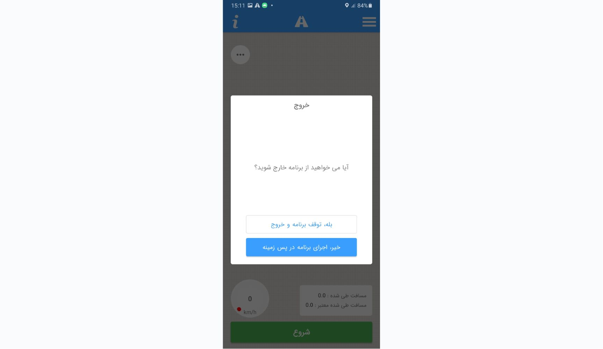

Hamvar Rah
Road-condition data collection for Android

Hamvar Rah is an Android app that collects sensor information throughout a road and sends it to a server at the end, with different accounts and a set of presets. Aside from the database, the web communication and the data analysis, I built the rest of it.
It evaluates the condition of intercity roads: at a set rate, readings from specific phone sensors are collected and analysed over chosen time windows, and all of it can run in the background. Once the data is captured and analysed, it is sent to the server with the user's own token. Signing up, logging in and editing account details all happen inside the app.
The app was developed by team Ace on behalf of the Hamvar Rah group.